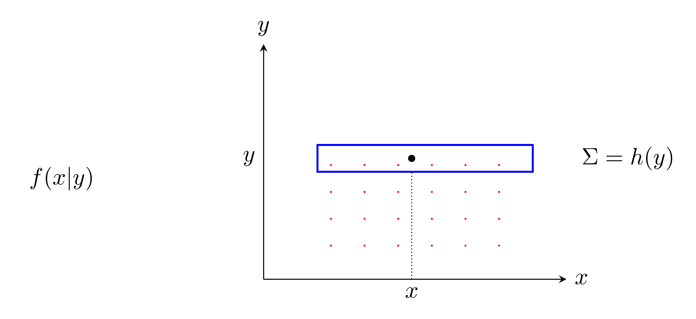
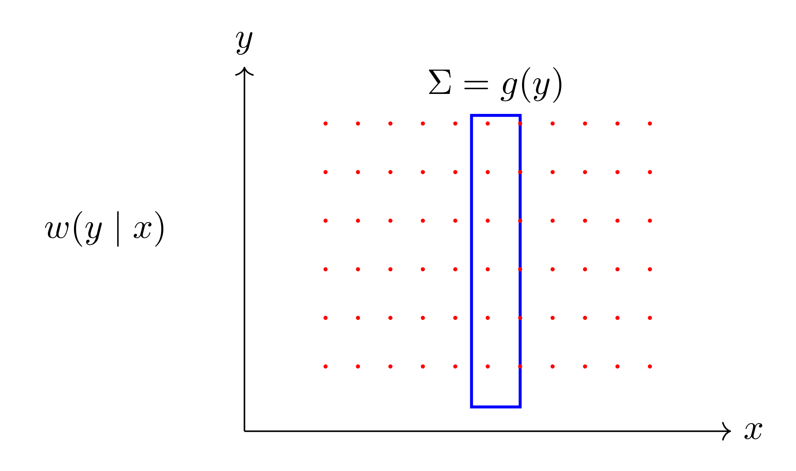
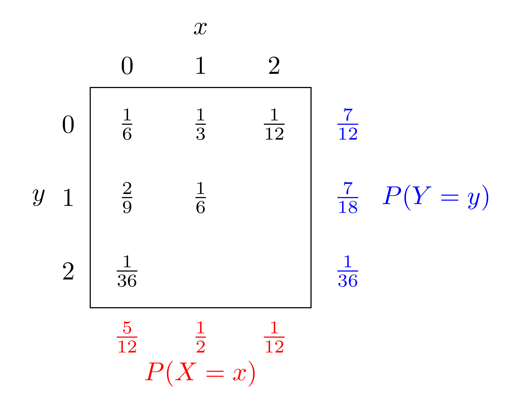
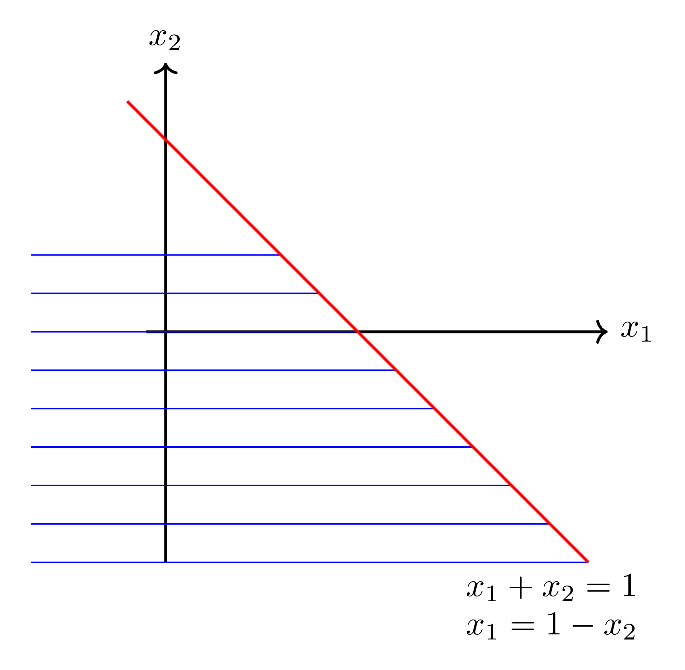
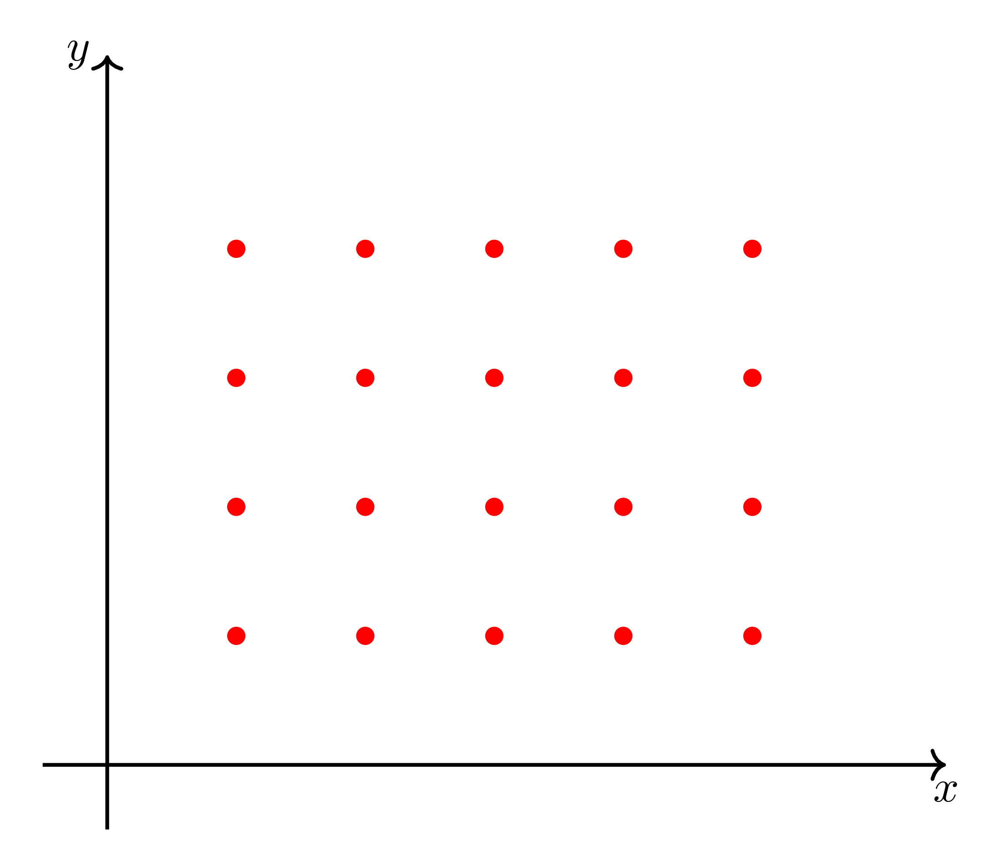

$\S$ 3.7 Conditional Distributions
In chapter 2, we defined the conditianal probability of an event $A$, given an event $B$, as
$$
P(A \mid B)=\frac{P(A \cap B)}{P(B)}
$$
provided $\quad P(B) \neq 0$.
Suppose now $X$ & $Y$ are discrete random variables with joint density $f(x, y)$ & marginals $g(x), h(y)$ respectively and let $A=\{X=x\}, B=\{Y=y\}$. Then
$$
\begin{aligned}
P(X=x \mid Y=y) & =\frac{P(X=x, Y=y)}{P(Y=y)} \\ \\
& =\frac{f(x, y)}{h(y)}
\end{aligned}
$$
provided $h(y)=P(Y=y) \neq 0$.
If we call this cond prob. $f(x \mid y)$ (to indicate that $x$ is a variable $\& y$ is fixed), we get the definition.
Definition).
Let $X, Y$ be discrete random variables with joint PDF $f(x, y)$ and let $g(x), h(y)$ be the marginal PDFs of $X, Y$ (respectively).The function:
$$
f(x \mid y)=\frac{f(x, y)}{h(y)}, \quad h(y) \neq 0
$$
for each $x$ within the range of $X$ is called the conditional distribution of $X$ given $Y=y$. Similarly the function
$$
w(y \mid x)=\frac{f(x, y)}{g(x)}, \quad g(x) \neq 0
$$
for each $y$ within the range of $Y$ is called the conditional distribution of $Y$ given $X=x$
Pictures:


Note $f(x \mid y) \geq 0$ and
$$
\sum_{x} f(x \mid y)=\sum_{x} \frac{f(x, y)}{h(y)}=\frac{1}{h(y)} \sum_{x} f(x, y)=\frac{h(y)}{h(y)}=1
$$
Similarly $w(y | x) \geq 0$ and
$$
\sum_{y} w(y \mid x)=\sum_{y} \frac{f(x, y)}{g(x)}=\frac{1}{g(x)} \sum_{y} f(x, y)=\frac{g(x)}{g(x)}=1 .
$$
Thus $f(x \mid y)$ and $g(y \mid x)$ can both serve as the PDF's of discrete random variables by Theorem 3.1. (p.74)
Example).
The tablets again!
$$
\begin{aligned}
& f(0 \mid 1)=\frac{f(0,1)}{h(1)}=\frac{\frac{2}{9}}{\frac{7}{18}}=\frac{4}{7} \\
& f(1 \mid 1)=\frac{f(1,1)}{h(1)}=\frac{\frac{1}{6}}{\frac{7}{18}}=\frac{3}{7} \\
& f(2 \mid 1)=\frac{f(2,1)}{h(1)}=\frac{0}{\frac{7}{18}}=0
\end{aligned}
$$
Note).
$\quad f(0 \mid 1)+f(1 \mid 1)+f(2 \mid 1)=1$as we saw earlier.
$$\begin{align} w(0 \mid 0)=\frac{f(0,0)}{g(0)}=\frac{\frac{1}{6}}{5 / 12}=\frac{2}{5}\\ w(1 \mid 0)=\frac{f(0,1)}{g(0)}=\frac{\frac{2}{9}}{\frac{5}{12}}=\frac{8}{15} \\ w(2 \mid 0)=\frac{f(0,2)}{g(0)}=\frac{\frac{1}{36}}{\frac{5}{12}}=\frac{1}{15} \end{align}$$ and
$$
w(0 \mid 0)+w(1 \mid 0)+w(2 \mid 0)=1
$$
as we'd expect.
For continuous random variables we have.
Definition).
If $f(x, y)$ is the value of a joint PDF of the continuous random variables $X, Y$ at $(x,y)$ and $h(y)$ is the value of the marginal density of $Y$ at $y$, the function given by$$
f(x \mid y)=\frac{f(x, y)}{h(y)}, \quad h(y) \neq 0,-\infty<x<\infty
$$
is called the conditional density of $x$ given $Y=y$, Correspondingly, if $g(x)$ is the value of the marginal density of $X$ at $x$, the function given by
$$
v(y| x)=\frac{f(x, y)}{g(x)}, \quad g(x) \neq 0, \quad-\infty<y<\infty
$$
is called the conditional density of $Y$ given $X=x_{\text {. }}$
Note $f(x \mid y) \geq 0$ and
$$
\begin{aligned}
\int_{-\infty}^{\infty} f(x \mid y) d x=\int_{-\infty}^{\infty} \frac{f(x, y)}{h(y)} d x & =\frac{1}{h(y)} \int_{-\infty}^{\infty} f(x, y) d x \\
& =\frac{h(y)}{h(y)}=1
\end{aligned}
$$
Also $w(y \mid x) \geq 0$ and
$$
\begin{aligned}
\int_{-\infty}^{\infty} w(y \mid x) d y=\int_{-\infty}^{\infty} \frac{f(y, y)}{g(x)} d y & =\frac{1}{g(x)} \int_{-\infty}^{\infty} f(x, y) d y \\
& =\frac{g(x)}{g(x)}=1
\end{aligned}
$$
Thus (provided $h(y) \neq 0, g(x) \neq 0), f(x \mid y)$ and $g(y \mid x)$ can serve as the PDFS of continuous random variables by Theorem 3.5 (p.86).
Example).
For the density we had earlier$$
f(x, y)=\left\{\begin{array}{l}
\frac{2}{3}(x+2 y), \quad 0<x, y<1 \\
0 \quad \text { elsewhere }
\end{array}\right.
$$
the conditional density of $X$ given $Y=y$ and use it to evaluate $P\left(\left.X \leq \frac{1}{2} \right\rvert\, Y=\frac{1}{2}\right)$.
Solution).
Recall we had the marginal PDF for $y$$$
h(y)=\left\{\begin{array}{l}
\frac{1}{3}(1+4 y), \quad 0<y<1 \\
0 \quad \text { elsewhere. }
\end{array}\right.
$$
Then for $0<q<1$ and $0<x<1$
$$
\begin{aligned}
f(x \mid y)=\frac{f(x, y)}{n(y)} & =\frac{\frac{2}{3}(x+2 y)}{\frac{1}{3}(1+4 y)} \\
& =\frac{2 x+4 y}{1+4 y}
\end{aligned}
$$
with $f(x \mid y)=0$ elsewhere $(-\infty<x \leq 1,1 \leq x<\infty)$. (No into for $-\infty<y \leq 1,1 \leq y<\infty$ ).
Then
$$
\begin{aligned}
f\left(x \left\lvert\, \frac{1}{2}\right.\right) & =\frac{2 x+4 \cdot \frac{1}{2}}{1+4 \cdot \frac{1}{2}} \\
& =\frac{2 x+2}{3}
\end{aligned}
$$
and so
$$
P\left(\left.X \leq \frac{1}{2} \right\rvert\, Y=\frac{1}{2}\right)=\int_{0}^{\frac{1}{2}} \frac{2 x+2}{3} d x=\frac{5}{12} .
$$
Example).
Given the joint PDF
$$
f(x, y)=\left\{\begin{array}{cl}
4 x y, & 0<x, y<1 \\
0 & \text { elsiwhere }
\end{array}\right.
$$
find the marginal densities of $X$ and $Y$ and the conditional density of $X$ given $Y=y$.
Solution).
For $0<x<1$,$$
g(x)=\int_{-\infty}^{\infty} f(x, y) d y=\int_{0}^{1} 4 x y d y=\left[2 x y^{2}\right]_{0}^{1}=2 x
$$
while $g(x)=0$ elsewhere.
For $0<y<1$
For $0<y<1$
$$
h(y)=\int_{-\infty}^{\infty} f(x, y) d x=\int_{0}^{1} 4 x y d x=\left[2 x^{2} y\right]_{0}^{1}=2 y
$$
while $h(y)=0$ elsewhere.
Thus, if $0<x<1 \quad(0<y<1)$
Thus, if $0<x<1 \quad(0<y<1)$
$$
f(x \mid y)=\frac{f(x, y)}{h(y)}=\frac{4 x y}{2 y}=2 x
$$
with $f(x \mid y)=0$ elsewhere (in $x$ ).
For more than 2 random varialbes the situation can be a bit more complicated.
E.g. if $f\left(x_{1}, x_{2}, x_{3}, x_{4}\right)$ is the joint PDF of the four discrete random variables $X_{1}, X_{2}, X_{3}, X_{4}$,
E.g. if $f\left(x_{1}, x_{2}, x_{3}, x_{4}\right)$ is the joint PDF of the four discrete random variables $X_{1}, X_{2}, X_{3}, X_{4}$,
$$
\begin{aligned}
p\left(x_{3} \mid x_{1}, x_{2}, x_{4}\right)= & \frac{f\left(x_{1}, x_{2}, x_{3}, x_{4}\right)}{g\left(x_{1}, x_{2}, x_{4}\right)}, \\
& \left.g (x_{1}, x_{2}, x_{4}\right) =\sum_{x_{3}} f(x_{1}, x_{2}, x_{3}, x_{4} ) \neq 0
\end{aligned}
$$
gives the conditional distribution of $x_{3}$ at $x_{3}$ given $X_{1}=x_{1}, X_{2}=x_{2}, X_{4}=x_{4}$.
$$
\begin{aligned}
q\left(x_{2}, x_{4} \mid x_{1}, x_{3}\right)= & \frac{f\left(x_{1}, x_{2}, x_{3}, x_{4}\right)}{m\left(x_{1}, x_{3}\right)} \\
& m\left(x_{1}, x_{3}\right):=\sum_{x_{3}, x_{4}} f\left(x_{1}, x_{2}, x_{3}, x_{4}\right) \neq 0
\end{aligned}
$$
gives the values of the joint conditional distribution of $X_{2}, X_{4}$ at $\left(x_{2}, x_{4}\right)$ given $X_{1}=x_{1}, X_{3}=x_{3}$.
$$
\begin{aligned}
r\left(x_{2}, x_{3}, x_{4}, x_{1}\right) & =\frac{f\left(x_{1}, x_{2}, x_{3}, x_{4}\right)}{b\left(x_{1}\right)} \\
\left.b_{1}(x_{1}\right) & =\sum_{x_{2}, x_{3}, x_{4}} f\left(x_{1}, x_{2}, x_{3}, x_{4}\right) \neq 0
\end{aligned}
$$
gives the joint conditional PDF of $x_{2}, x_{3}, x_{4}$ at $\left(x_{2}, x_{3}, x_{4}\right)$ given $x_{1}=x_{1}$.
RULE OF THUMB
The factor one needs to divide the joint density (e.g. $f\left(x_{1}, x_{2}, x_{3}, x_{4}\right)$ ) is the sum of the joint PDF over all thase variables over when one is NOT conditioning.
Independence
Recall that in the last example, we found $f(x \mid y)=2 x$ - does not depend on $y$, while in the example before that
$$
f(x \mid y)=\frac{2 x+4 y}{1+4 y}-\text { depends on } y
$$
Suppose $f(x \mid y)$ does not depend on $y$. Write $f(x \mid y)=k(x)$.
Then (in the discrete case), recalling the marginal PDF $g(x)=\sum_{y} f(x, y)$, we get
$$
\begin{aligned}
g(x)=\sum_{y} f(x, y) & =\sum_{y} f(x|y) h(y) \\
& =\sum_{y} k(x) h(y) \\
& =k(x) \sum_{y} h(y)=k(x) \cdot 1=h(x) \text { is a PDF! }
\end{aligned}
$$
Thus $k(x)=p(x \mid y)=g(x)$, and so
$$ f(x, y)=f(x \mid y) h(y)=g h(h)(y) \quad(h(y) \neq 0) . $$
This motivates the following definition.
Definition).
If $f\left(x_{1}, x_{2}, \ldots, x_{n}\right)$ is the joint PDF of the $n$ discrete random variables $x_{1}, x_{2}, \ldots, x_{n}$ at $\left(x_{1}, \ldots, x_{n}\right)$, and $f_{i}\left(x_{i}\right)$ is the value of the marginal distribution of $x_{i}$ at $x_{i}$ for $1 \leq i \leq n$, then the $n$ random variables are independents iff$$
f\left(x_{1}, x_{2}, \ldots, x_{n}\right)=f_{1}\left(x_{1}\right) \cdot f_{2}\left(x_{2}\right) \cdots \cdot f_{n}\left(x_{n}\right)
$$
for all $x_{1}, x_{2}, \ldots, x_{n}$ within their range.
Note:
A similar definition holds for continuous random variables.Let's see how this relates to the indendence we are familiar with $(P(A \cap B)=P(A) P(B))$ for the simplest case of two discrete random variables.
Basic idea is that for two random variables, events associated with each of them $(\{x \in C\},\{y \in D))$ should be independent in the usual sense.
If $x_{1}, x_{2}$ are ind. so that $f(x, y)=g h, h(y)$.
Then
Then
$$
\begin{aligned}
P(X=x, Y=y) & =f(x, y)=g(x) h(y) \\
& =P(X=x) \cdot P(Y=y)
\end{aligned}
$$
or
$$
\begin{equation*}
P(\{X=x\} \cap\{Y=y\})=P(X=x) \cdot P(Y=y) . \tag{*}
\end{equation*}
$$
This argument is reversible and if we were to take $(*)$ instead as our definition of independence, we would again find that $f(x, y)=g(x) h(y)$ and so we would recover the earlier definition . of indupendence for two descrete random variables.
Example).
For $n$ independent flips of a coin, let $X_{i}$ be the nnumber of heads $(0$ on 1$)$ obtained in the ith flip for $1 \leq i \leq n$. Find the joint PDF of $x_{1}, \ldots, x_{n}$.Solution).
Each $x_{i}$ has probability distribution $f_{i}(x_i)$ with
$$
f_{i}\left(x_{i}\right)= \begin{cases}\frac{1}{2}, & x_{i}=0,1 \\ 0 & \text { otherwise }\end{cases}
$$
Since these random variables are independent, the joint PDF is
$$f\left(x_{1}, \ldots, x_{n}\right)=f_{1}\left(x_{1}\right) f_{2}\left(x_{2}\right) \cdots f_{n}\left(x_{n}\right)$$
so that
$$f\left(x_{1}, \ldots, x_{n}\right)=f_{1}\left(x_{1}\right) f_{2}\left(x_{2}\right) \cdots f_{n}\left(x_{n}\right)$$
so that
$$
f\left(x_{1,2} x_{n}\right)= \begin{cases}\frac{1}{2^{n}}, & x_{1}=0 \text { or } 1 \quad \text{ for each } 1 \leq i \leq n \\ 0 & \text { othemise }\end{cases}
$$
Example).
Given the independent random variables $X_{1}, X_{2}, X_{3}$ with PDFS$$
\begin{aligned}
& f_{1}\left(x_{1}\right)= \begin{cases}e^{-x_{1}}, & x_{1}>0 \\
0 & \text { elsewhere }\end{cases} \\
& f_{2}\left(x_{2}\right)= \begin{cases}2 e^{-2 x_{2}}, & x_{2}>0 \\
0 & \text { elsewhere }\end{cases} \\
& f_{3}\left(x_{3}\right)= \begin{cases}3 e^{-3 x_{3}}, & x_{3}>0 \\
0 & \text { elsiwhere }\end{cases}
\end{aligned}
$$
find the joint PDF and use it to get
$$
P\left(x_{1}+x_{2} \leq 1, x_{3}>1\right)
$$
Solution).
Since $x_{1}, x_{2}, x_{3}$ are independent, the joint PDF $f\left(x_{1}, x_{2}, x_{3}\right)$ is given by$$
\begin{aligned}
& f\left(x_{1}, x_{2}, x_{3}\right)=f_{1}\left(x_{1}\right) f_{2}\left(x_{2}\right) f_{3}\left(x_{3}\right) \text { or } \\
& f\left(x_{1}, x_{2}, x_{3}\right)=\left\{\begin{array}{l}
6 e^{-x_{1}-2 x_{2}-3 x_{3}}, x_{1}, x_{2}, x_{2}>0 \\
0 \text { otherwise }
\end{array}\right.
\end{aligned}
$$
Then
$P\left(x_{1}+x_{2} \leq 1, x_{3}>1\right)$
$=\int_{1}^{\infty} \int_{-\infty}^{\infty} \int_{-\infty}^{1-x_{2}} f\left(x_{1}, x_{2}, x_{3}\right) d x_{1} d x_{2} d x_{3}$
$=\int_{1}^{\infty} \int_{0}^{1} \int_{0}^{1-x_{2}} f\left(x_{1}, x_{2}, x_{3}\right) d x_{1} d x_{2} d x_{3}$ or $x_{2}<0$ as if $x_{2}>1$, then $1-x_{2}<0$ and $x_{1}<1-x_{2}$
$=\int_{1}^{\infty} \int_{0}^{1} \int_{0}^{1-x_{2}} 6 e^{-x_{1}-2 x_{2}-3 x_{3}} d x_{1} d x_{2} d x_{3} \Rightarrow x_{1}<0$ and so $f\left(x_{1}, x_{2}, x_{3}\right)=0$
$=\int_{1}^{\infty} \int_{0}^{1} 6 e^{-2 x_{2}} e^{-3 x_{3}} \int_{0}^{1-x_{2}} e^{-x_{1}} d x_{1}$
$P\left(x_{1}+x_{2} \leq 1, x_{3}>1\right)$
$=\int_{1}^{\infty} \int_{-\infty}^{\infty} \int_{-\infty}^{1-x_{2}} f\left(x_{1}, x_{2}, x_{3}\right) d x_{1} d x_{2} d x_{3}$

$=\int_{1}^{\infty} \int_{0}^{\infty} \int_{0}^{1-x_{2}} f\left(x_{1}, x_{2}, x_{3}\right) d x_{1} d x_{2} d x_{3} \text{ as } f(x_1,x_2,x_3)=0 \text{ if }x_1<0,x_2<0 $$=\int_{1}^{\infty} \int_{0}^{1} \int_{0}^{1-x_{2}} f\left(x_{1}, x_{2}, x_{3}\right) d x_{1} d x_{2} d x_{3}$ or $x_{2}<0$ as if $x_{2}>1$, then $1-x_{2}<0$ and $x_{1}<1-x_{2}$
$=\int_{1}^{\infty} \int_{0}^{1} \int_{0}^{1-x_{2}} 6 e^{-x_{1}-2 x_{2}-3 x_{3}} d x_{1} d x_{2} d x_{3} \Rightarrow x_{1}<0$ and so $f\left(x_{1}, x_{2}, x_{3}\right)=0$
$=\int_{1}^{\infty} \int_{0}^{1} 6 e^{-2 x_{2}} e^{-3 x_{3}} \int_{0}^{1-x_{2}} e^{-x_{1}} d x_{1}$
$$
\begin{aligned}
& =\int_{1}^{\infty} \int_{0}^{1} 6 e^{-2 x_{2}} e^{-3 x_{3}}\left[-e^{-x_{1}}\right]_{0}^{1-x_{2}} d x_{2} d x_{3} \\
& =\int_{1}^{\infty} \int_{0}^{1} 6 e^{-2 x_{2}} e^{-3 x_{3}}\left(1-e^{x_{2}-1}\right) d x_{2} d x_{3} \\
& =\int_{1}^{\infty} 6 e^{-3 x_{3}}\left\{\int_{0}^{1}\left(e^{-2 x_{2}}-e^{-x_{2}-1}\right) d x_{2}\right\} d x_{3} \\
& =\int_{1}^{\infty} 6 e^{-3 x_{3}}\left[-\frac{1}{2} e^{-2 x_{2}}+e^{-x_{2}-1}\right]_{0}^{1} d x_{3} \\
& =\int_{1}^{\infty} 6 e^{-3 x_{3}}\left(-\frac{1}{2} e^{-2}+e^{-2}-\left(-\frac{1}{2}+e^{-1}\right)\right) d x_{3} \\
& =6\left(\frac{1}{2}-e^{-1}+\frac{1}{2} e^{-2}\right) \cdot \lim _{z \rightarrow \infty} \int_{1}^{z} e^{-3 x_{3}} d x \\
& =6\left(\frac{1}{2}-e^{-1}+\frac{1}{2} e^{-2}\right) \lim _{z \rightarrow \infty}\left[-\frac{e^{-3 x_{3}}}{3}\right]_{1}^{t}
\end{aligned}
$$
$$
\begin{aligned}
& =6\left(\frac{1}{2}-e^{-1}+\frac{1}{2} e^{-2}\right) \lim _{z \rightarrow \infty}\left(-\frac{e^{-3 z}}{3}+\frac{e^{-3}}{3}\right) \\
& =6\left(\frac{1}{2}-e^{-1}+\frac{1}{2} e^{-2}\right) \cdot \frac{e^{-3}}{3} \\
& =\left(1-2 e^{-1}+\frac{1}{2} e^{-2}\right) \cdot e^{-3}
\end{aligned}
$$
Example).
The tablets (yet) again. Recall that X (Number of aspirin) and $Y$ (Number of sedatives) had the following joint distribution and marginalsQ. Are $X$ and $Y$ independent?
A. No, e.g. $P(X=2, Y=2)=0$, but
$$
P(x=2) \cdot P(y=2)=\frac{1}{12} \times \frac{1}{36}=\frac{1}{432}
$$
FACT:
If the set of values where the joint PDF is non-zero is not a 'rectangle' (i.e. a cartesian product of a set of $x$-values and a set of $y$-values), then $X$ and $Y$ are not independent.True for both discrete and continuous random variables. Similar conclusions hold for the joint PDF of any number of random variables.
Eg. (Discrete case).

Definitely not independent

May (or may not) be independent. Needs further investigation.